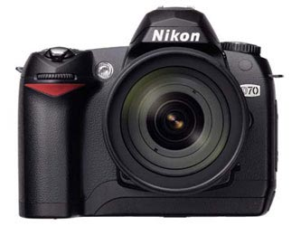

Nikon D70 announced
Nikon announced the new consumer entry dslr; the D70 .

Speaking about the news Robert Cristina, Product Manager, SLR Systems, Nikon Europe said:
“The D70 marks the next step in Nikon’s expansion of the digital camera market. Having pioneered the introduction of performance digital SLR cameras with the D1 in 1999 Nikon has established a product range that addresses the needs of high-end professionals, business users and photo enthusiasts. The D70, through the incorporation of the popular Nikon DX format and Nikon F lens mount gives access to the full range of Nikon AF lenses and accessories. This new camera will bring the excitement of digital SLR photography within the reach of the personal budgets of advanced amateurs.”
Nikon Europe confirms new Digital SLR camera will be introduced in the Spring Following recent media speculation, Nikon Europe is pleased to confirm that an all-new lens-interchangeable digital SLR camera named the D70 will be introduced by Nikon Corporation, Japan for worldwide sale in the spring of 2004. The aproximate body price will be around 1100 euro.
A dutch mini website is also available for the D70. It seems to be a dutch site but also an international version seems to be hosted under the NL top level domain.
Below is the official USA press release.
New Nikon D70 Poised to Expand Digital SLR Camera Market by Delivering Excellent Performance and Superb Image Quality at an Attractive Price
MELVILLE, N.Y., Dec. 3 /PRNewswire/ — Nikon (http://www.nikonusa.com), the world leader in photography, today announced development of the D70, a new interchangeable-lens digital SLR camera designed to deliver superb image quality and hallmark Nikon SLR performance at an attractive price that a broad range of consumers will find within reach. A new DX Zoom-Nikkor lens is being developed concurrently to match the D70, and both products are scheduled to go on sale in the spring of 2004.
Designed for a wide range of customers, from novices to serious and experienced photo enthusiasts, the D70 will enable photographers to easily adopt digital technology into their existing camera system. The new model will offer an exclusive selection of new features and exciting Nikon SLR technology that will surpass products within the evolving digital SLR market, and provide exceptional value at an estimated retail price of $999.00 for the camera body.
“The D70 represents Nikon’s next step in expanding the digital SLR camera market. Ever since the introduction of the revolutionary D1 in 1999, Nikon has been in constant pursuit of the highest image quality and performance in digital SLRs.
This has led to the introduction of the D1X, the D1H, and most recently the groundbreaking D2H. The D100, introduced in June 2002, marked Nikon’s efforts in bringing digital SLR technology into the hands of enthusiast photographers, and has since become a flagship camera for this audience,” said Richard LoPinto, vice president for SLR camera systems, Nikon Inc. “With the development of the D70, Nikon is responding to a growing interest among a broad range of photo enthusiasts who are looking for a full featured digital SLR camera that fits within their personal budgets, and also the expanding interest among amateurs who enjoy great pictures and want the high level of performance that a Nikon digital SLR can provide.”
The D70 joins Nikon’s current selection of digital SLR models and employs the popular Nikon DX format sensor and Nikon F lens mount. This design will allow photographers to use high quality DX Nikkor lenses, and also maintain seamless compatibility with all AF Nikkor lenses and the D70. Designed exclusively for Nikon’s D-series digital SLR cameras, DX Nikkor lenses are optimized to achieve outstanding center-to-edge-to-corner image quality, when used with any of Nikon’s digital SLR cameras including the D1, D1X, D1H, D100, the new high-speed D2H, and the forthcoming D70. Nikon currently has three DX Nikkor lenses that offer exceptional wide-angle coverage:
- AF DX Fisheye-Nikkor 10.5mm f/2.8G ED lens: 180 degree angle-of-view
- AF-S DX Zoom-Nikkor 12-24mm f/4G IF-ED: 99 degree - 61 degree angle-of-view
- AF-S DX Zoom-Nikkor 17-55mm f/2.8G IF-ED: 79 degree - 28 degree 50’ angle-of-view
More information and detailed specifications about the D70 will become available at a later date. Please log on to http://www.nikonslr.com for more information about Nikon digital SLR photography and products.
SOURCE Nikon Inc
XHTML, CSS, RSS feeds. Powered by Movable Type. Hosted @Home with a domain by hostway.
Comments
Seems like there is no much known of the new D70 except the Nikon press release. Waiting for more news on Jancology.com :-)
Esperamos que esta máquina tenha incorporador avanços tecnológicos que supram as falhas de fabricação das máquinas Nikon (em relação a Canon, tais como: sistema de autofocus (velocidade e precissão), infravermelho em relação ao posicionamento dos pontos de focos - ou seja, o infravermelho só é ascionado como o foco no centro, etc. Tais fatos estão me fazendo pensar em migrar para equipamentos Canon.